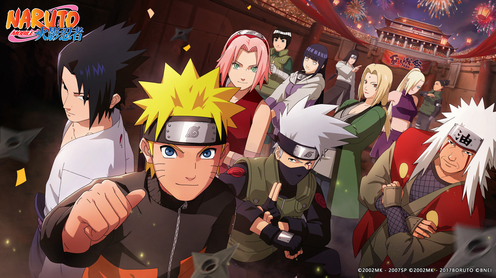
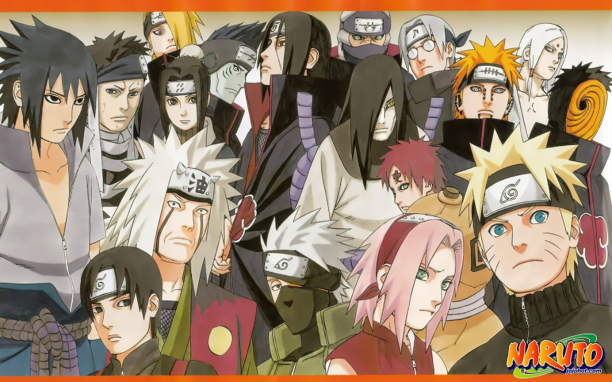
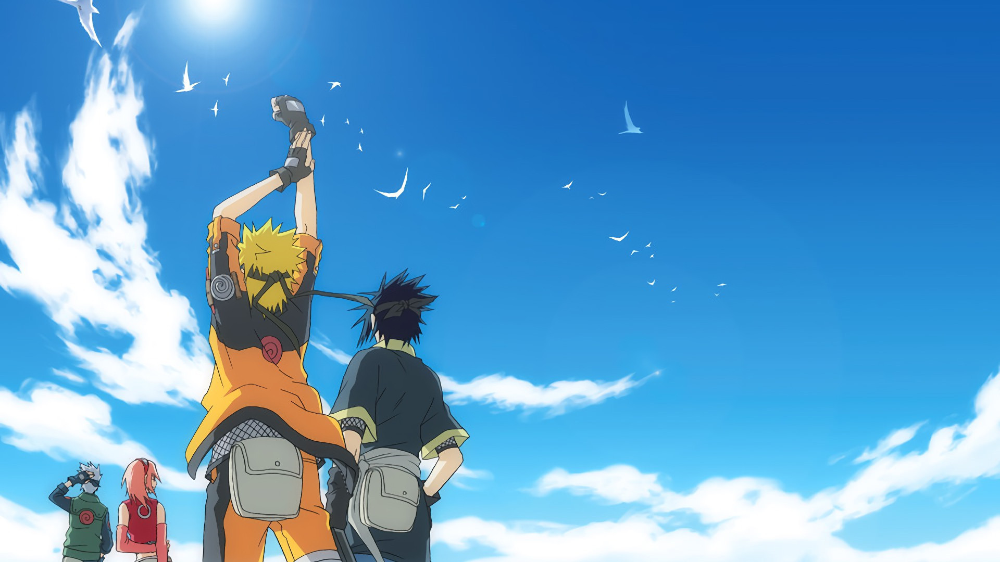
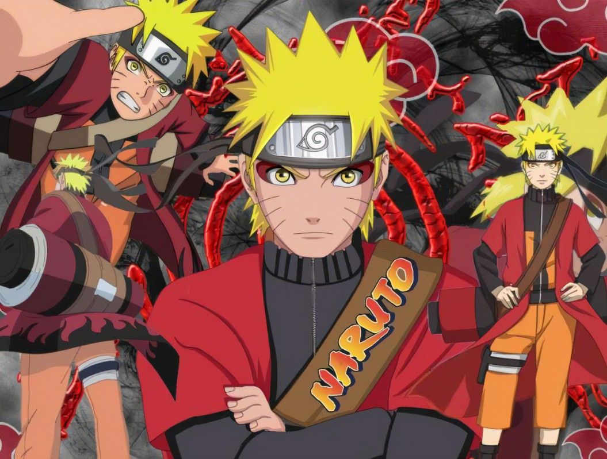
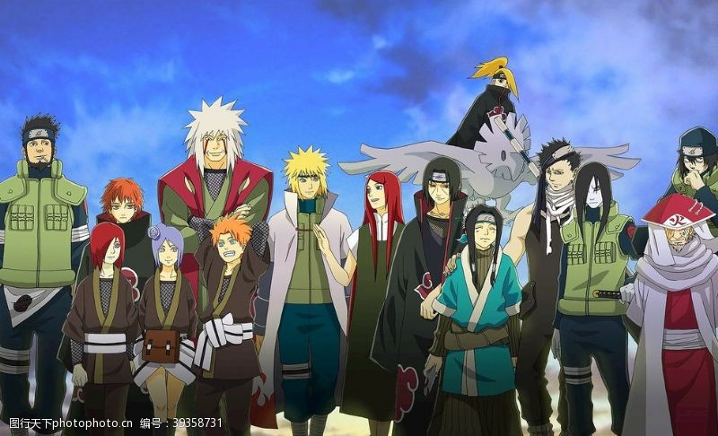

我爱看的动漫

该漫画讲述了木叶村四代火影的遗孤漩涡鸣人在成长的过程中，通过不断努力、成长和战斗，最终实现梦想并成为一位伟大忍者的故事。故事中，鸣人经历了许多挑战和困难，包括与敌人的战斗、与朋友的冲突以及内心的挣扎。他不断努力提升自己的实力，学习各种忍术和技能，并与其他忍者一起组成团队，共同完成各种任务。在这个过程中，鸣人逐渐成长为一名坚强、勇敢、有责任感的忍者，并最终实现了自己的梦想，成为了木叶村的火影。
《火影忍者》的成功不仅在于其精彩的故事情节和深刻的主题，还在于其丰富的角色塑造和独特的艺术风格。漫画中的角色形象鲜明，个性各异，每个角色都有自己的梦想、目标和成长历程。此外，漫画中的忍术和战斗场景也非常精彩，充满了想象力和创意。
总的来说，《火影忍者》是一部非常优秀的漫画作品，它不仅在日本国内受到了广泛的欢迎和喜爱，也在全球范围内拥有了大量的粉丝。它的成功不仅为日本漫画产业的发展做出了重要贡献，也为全球动漫文化的交流和传播做出了积极的贡献。
火影图片分享



